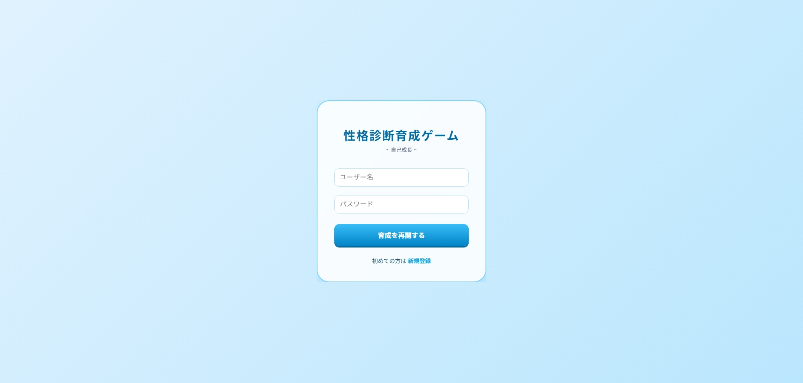
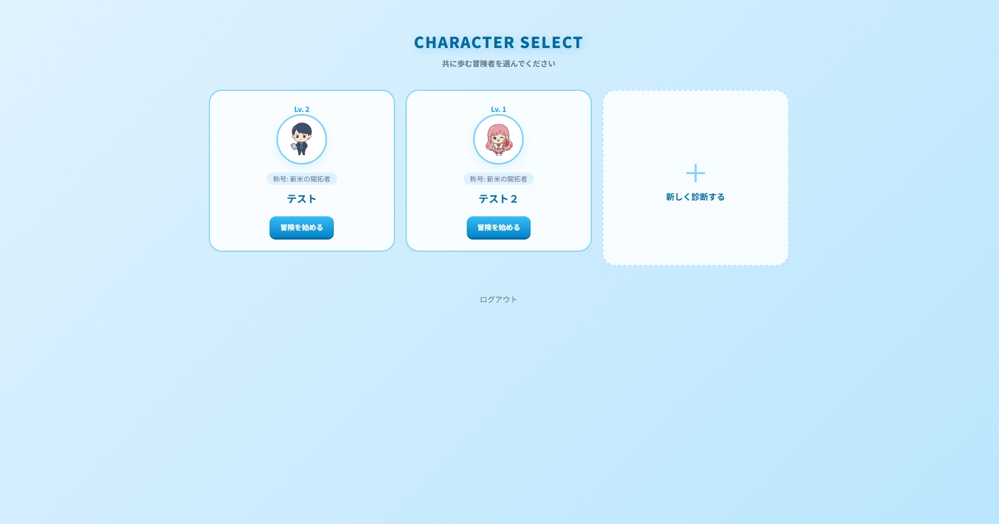
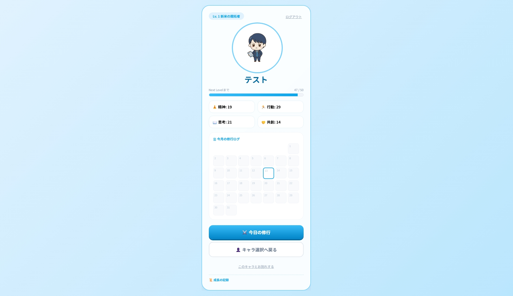
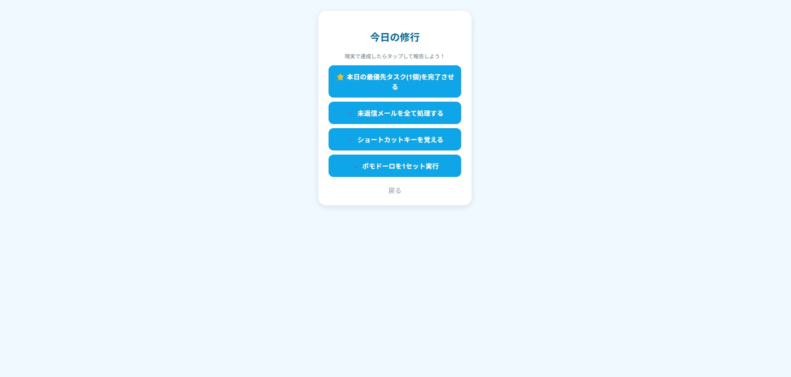

Works
性格診断育成ゲーム（グループ制作）
| URL | https://be-study.com/self_growth_rpg/login.php |
|---|---|
| Team Composition | 3名/デザイン、プロンプトエンジニアリング、フロントエンド実装 |
| Role | プロンプトエンジニアリング |
| Concept | 「習慣化を冒険に変える」をコンセプトに、流行りの性格診断を取り入れ、育成ゲーム要素で楽しみながら習慣化できる環境を提供することを目的としています。 |
| Design | 直感的に操作できるように、わかりやすくシンプルかつ、AIで生成したキャラクターが映えるような背景設定を行いました。 |
| Tool | Gemini/VSCode / XAMPP (Apache, MySQL) |



